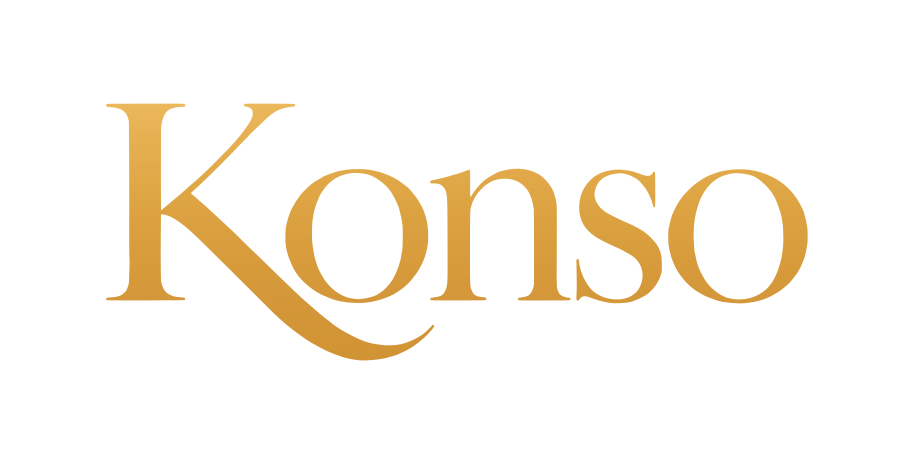
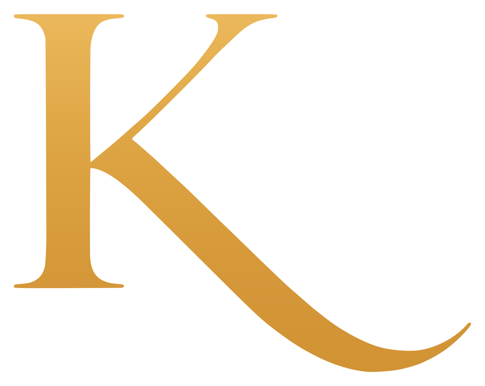
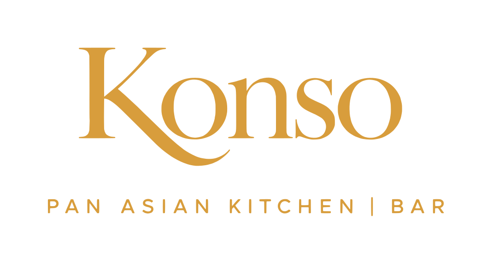

Pan Asian Kitchen & Pub. Quiet and warm: a flared serif wordmark in gold foil on deep bottle green, with a swash K that curls under the o.
01 · Logo
Wordmark and lockup
The wordmark is artwork, not a typeface. Always place the supplied files and never retype or redraw it. The lockup adds the descriptor line; use the wordmark alone when space is tight.
Lockup: the default, gold on green

Wordmark: nav bars, small spaces, stamps

Monogram K: favicon, avatar, seals
Note: the lockup artwork still carries the earlier descriptor "Pan Asian Kitchen | Bar". The official line is Pan Asian Kitchen & Pub; set it in Montserrat beside the wordmark until the lockup is redrawn.
02 · Versions
Colourways
Gold on green is the signature. Green on cream for light grounds. Cream on green for one-colour jobs.
Gold on bottle green: signage, menus, screens
Green on cream: print, receipts, paper bags

Cream on green: one-colour printing, embroidery
Green on white: invoices, documents

Flat gold #D89D3C: vinyl, stamps, embroidery only
App icon: foil K on green
Foil finish. For menus, cards and door signs use the foil artwork in logo/foil. For flat print, vinyl, embroidery and web, use the vectors.
03 · Colour
Palette
Sampled from the approved logo. For print, match to a foil sample, not to a screen.
Steam cream#F2E8D2 · RGB 242, 232, 210 Light grounds, text on green
Foil gradient
Gold in any logo is a vertical gradient, light at the top, warmer at the bottom: #EBB85B, #E2AA4A, #DA9F3E, #D49739, #D19333. Use flat #D89D3C only where a gradient is impossible.
Pair
Contrast
Use
Gold on bottle green
7.5 : 1
All text sizes
Cream on bottle green
14.7 : 1
Body text on green
Green on cream
14.7 : 1
Body text on paper
Gold on cream
2.0 : 1
Never; use green
04 · Typography
Fonts
Both are free (SIL Open Font License) and included in fonts/. The wordmark itself is artwork, not set in either.
Display · Prata Regular
Wok, steam & supper
Headings, menu section titles, large quotes. Sentence case, regular weight only, never bold or faux-bold.
Label · Montserrat SemiBold 600
Pan Asian Kitchen & Pub
Descriptor, buttons, navigation, captions. Uppercase, tracking +0.18em, small sizes.
Body · Montserrat Regular 400 / Medium 500
Hand-folded dumplings, wok-fired noodles and slow broths, served with something cold and good to drink. Open from noon, late into the evening.
Menus, signage copy, web and print body text. Line-height 1.5 to 1.65. Fallbacks: Helvetica Neue, Arial.
05 · Usage
Rules
Do
Leave clear space on every side equal to the height of the K stem.
Keep the wordmark at least 24 mm wide in print, 120 px on screen. Smaller: use the monogram.
Use the lockup at 40 mm or wider; smaller, use the wordmark alone.
Put gold only on bottle green; put green only on cream or white.
Use Prata for headings and Montserrat for everything else.
Don't
Don't retype the name, stretch it, or detach the swash from the K.
Don't put gold on cream, white or photographs.
Don't add outlines, shadows or glows to the flat versions.
Don't crop the wordmark or recolour outside the palette.
Don't mix in old Cabin East artwork (pint glass, burgundy, hoarding signs, slab type).